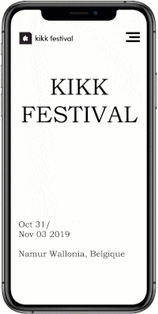
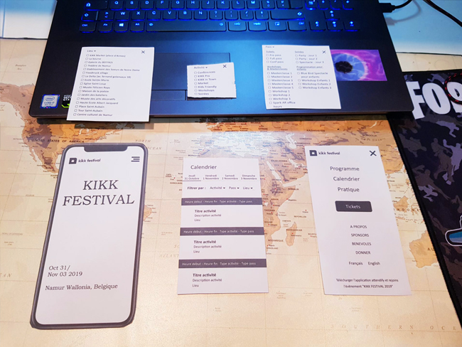
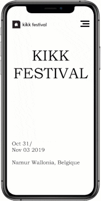
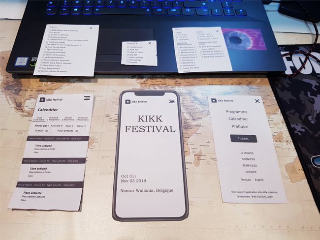
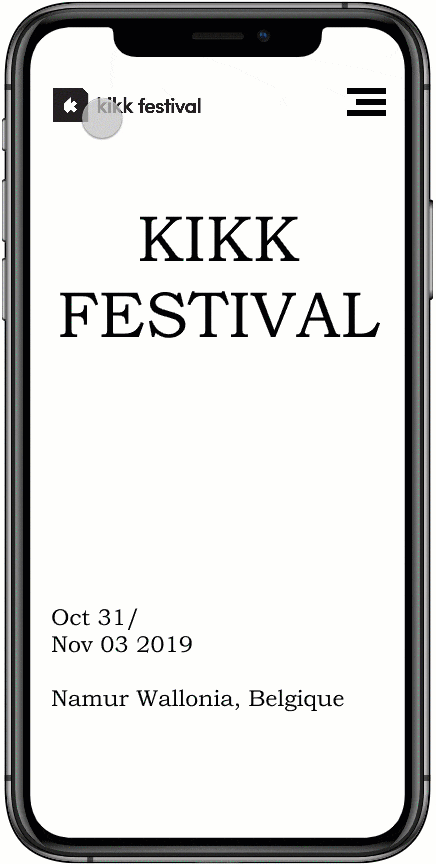

Rethinking UX est un workshop en groupe dont l'objectif est de repenser une fonctionnalité d'un service
proposé.
Cette année le sujet c'était de repenser et améliorer l'expérience utilisateur du site KIKK Festival.
KIKK Festival
Le KIKK est un festival international consacré à la créativité dans les cultures numériques.
C'est un mélange de technologies, d'arts visuels, de musique, d'architecture, de design et de médias
interactifs, il se profile comme un panel des meilleures offres dans le domaine des innovations économiques,
technologiques et artistiques.
Le KIKK c'est aussi :
des conférences et ateliers ;
une exposition d'art numérique et des prototypes ;
Pour commencer nous avons déterminé en groupe les besoins utilisateurs en identifiant 3 tâches qu'un
utilisateur peut effectuer sur le site du KIKK.
Ensuite chacun de nous a choisi une tâche parmi les 3 identifiées afin de repenser son fonctionnement et
imaginer des fonctionnalités qui permettent à l'utilisateur d'effectuer cette tâche plus facilement et
agréablement et qui répondent à la tâche choisie.
Les 3 tâches choisies :
achat des billets ;
parcourir le programme ;
avoir plus de détails sur le programme .
Identification des problèmes
Nous avons imaginé plusieurs scenarios et réalisé des user journey en fonction de la tache choisie afin
d'identifier les différents problèmes qu'un utilisateur peut rencontrer lorsqu'il réalise la tache choisie
précédemment sur le site du Festival.
Après avoir identifié plusieurs taches et tester les différents fonctionnalités de chacune, j'ai remarqué que
la fonctionnalité « calendrier » pose un gros problème à l'utilisateur.
Il s'agit d'un calendrier qui fait 5 fois la largeur de la page, d'un premier regard on ne comprend pas
comment regroupe–t–il les informations et comment on fait pour défiler dans le temps.
Pour moi cette fonctionnalité est absolument essentielle elle permet à l'utilisateur de parcourir
et avoir plus de détails sur le programme du festival, et de choisir par la suite les activités qui nous
intéressent.
Proposer des solutions
Aprés avoir identifié et testé les tâches qui posent problémes, nous avons ensuite réalisé des
wireframing papiers dans le but de proposer des solutions appropriées au problématique posée, et mener
l'utilisateur à réaliser la tache choisie sans qu'il ne soit perdu.
En testant notre wireframing il faut observer le comportement et les actions de l'utilisateur pour
savoir si la solution proposée est suffisamment compréhensible et facilite à l'utilisateur d'exécuter la tâche
choisie précédemment, et d'obtenir en même temps un aperçu base de la fonctionnalités proposée.
Wireframing
Version 1

Sur la première version de mon wireframing j'ai réussi à présenter l'ensemble du programme des 4 jours du
festival dans une seule page, donc ça résolu le problème du défilement horizontal dans la version de base du
site qui faisait 3 fois la largeur de la page.
Mais il y avait un problème au niveau des filtres car les utilisateurs n’arrivaient pas à faire la
différence entre « filtrer par activité » et « filtrer par pass », au final ils contiennent des éléments en
commun, et aussi le « filtre par lieu » n’était pas validé par la plupart des utilisateurs car la ville de
Namur est petite donc pour se déplacer et assister à toutes les activités ça représente pas un problème pour
eux.

Version 2

J'ai commencé alors une nouvelle version, en supprimant les 2 éléments du filtre qui posaient problème et
j'ai rajouté un filtre qui pourra être très pratique aux utilisateurs qui aimeront assister à des activités
dans un domaine ou thème précis, et que lorsqu'on choisi un thème les résultats seront filtrés en fonction
de ce dernier.
Apres avoir testé cette version par Mr.Bourgeaux, il m'a fait la remarque que le fait d'avoir plusieurs
listes déroulantes en version mobile ne donne pas très envie à l'utilisateur de les survoler et qu'elles
peuvent passer inaperçus aux yeux des utilisateurs.

Version 3

Sur cette version j'ai changé la représentation du filtre « thème », ayant l'idée de le représenter sous
forme des "Checkbox" afin que ça soit plus lisible à l'utilisateur, en lui permettant de choisir un ou
plusieurs thème en même temps.
Le fait de cliquer sur « tous les thèmes » permet de désactiver le filtre et afficher toutes les activitées
par défaut.
Vous pouvez tester la version finale du prototype en cliquant sur le lien ci-dessous :
Pour finir Rethinking UX était un workshop très intéressant et amusant en même temps, durant ce workshop j'ai
appris comment développer mon regard critique sur une interface web et de mieux l’a comprendre et aussi
l’analyser afin d'identifier des éventuels problèmes et avoir une réflexion adéquate pour améliorer l'expérience
utilisateur sur cette interface par la suite en passant par plusieurs étapes ( imaginer des fonctionnalités,
concevoir des prototypes, tester les prototypes…).
Grâce à cette expérience je pourrai mieux orienter mes choix et mon contenu pour les prochains projets à venir
afin de créer des interfaces plus faciles à utiliser et qui répondent beaucoup mieux à l'expérience utilisateur.